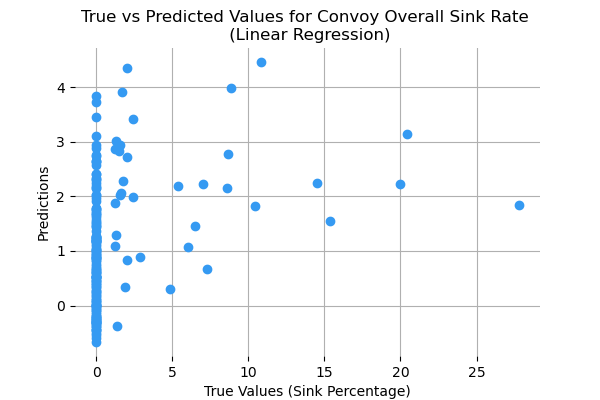
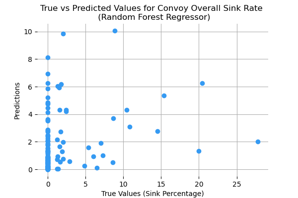
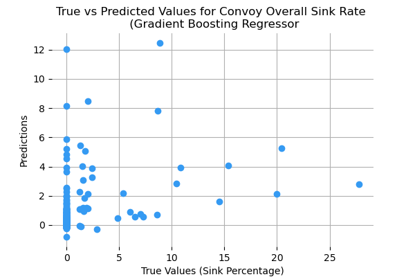

Original Models:
The original attempt aimed to use machine learning models to predict the precise sink percentage for each convoy. Linear
Regression, Random Forest Regressor, and Gradient Boosting Regressor models were deemed the most applicable models in this first
approach. Link to the initial model testing code can be found
here.
Despite employing some optimization methods, all the models yielded low test scores (R2).
Below are the results for these three models tested:
| Linear Regression |
|---|
| Train Score (R2) | 0.4253521196075005 |
| Test Score (R2) | 0.4182577923968136 |
| Intercept | 1.1144472022457077 |
| K-Fold Train Score (Mean R2) | 0.42692364080872397 |
| K-Fold Test Score (Mean R2) | 0.3860106343568942 |
| Random Forest Regressor |
|---|
| Train Score (R2) | 0.9084429952687048 |
| Test Score (R2) | 0.3737543493369251 |
| Mean Squared Error | 8.976407583255757 |
| K-Fold Train Score (Mean R2) | 0.907216313534982 |
| K-Fold Test Score (Mean R2) | 0.14177016659921754 |
| Gradient Boosting Regressor |
|---|
| Train Score (R2) | 0.8108159645821675 |
| Test Score (R2) | 0.06908893514660186 |
| Mean Squared Error | 13.343385511802069 |
| K-Fold Train Score (Mean R2) | 0.7650187716574124 |
| K-Fold Test Score (Mean R2) | -0.2242567375852599 |



All three models are unable to produce accurate results as seen in their test scores. Additionally, the graphs
compare true versus predicted sink rates visualizing the models inability to accurately predict sink rates. Predicting
an exact sink percentage appears to be unrealistic. Despite the many attributes used in the models, there are a number of
uncontrollable factors which led to convoys experience sinkings including weather, sea state, evasive maneuvers, night vs day attack,
number of U-Boats attacking, etc. The instances of convoys with a high number of ships sunk also make it harder for the
models to preform accurately as they stray far from the mean sink percentage of about 0.20. Thus, sink percentage will be changed
to a binary value of 0 (no ships sunk) or 1 (at least one ship sunk). The aim of this is to alleviate the complexity of predicting
an exact sink percentage for each convoy. Additionally, by switching to classification, it provides a more realistic approach as
identifying convoys at risk is more generalized and scalable approach to predicting specific convoys sink rates. The initial results
of classification are below:
| Logistic Regression |
|---|
| Train Score (Mean Accuracy) | 0.811965811965812 |
| Test Score (Mean Accuracy) | 0.8068181818181818 |
| Mean Squared Error | 0.19318181818181818 |
| K-Fold Train Score | 0.8071378962697434 |
| K-Fold Test Score | 0.8075365726227796 |
| Random Forest Classifier |
|---|
| Train Score (Mean Accuracy) | 1.0 |
| Test Score (Mean Accuracy) | 0.8579545454545454 |
| Mean Squared Error | 0.14204545454545456 |
| K-Fold Train Score | 1.0 |
| K-Fold Test Score | 0.8370950888192269 |
| Gradient Boosting |
|---|
| Train Score (Mean Accuracy) | 0.9487179487179487 |
| Test Score (Mean Accuracy) | 0.8693181818181818 |
| Mean Squared Error | 0.13068181818181818 |
| K-Fold Train Score | 0.9383702731680776 |
| K-Fold Test Score | 0.8336729362591433 |
| Random Forest Classifier Report |
|---|
| Precision | Recall | F1-Score | Support |
|---|
| 0 (No Risk) | 0.87 | 0.97 | 0.92 | 141 |
| 1 (At Risk) | 0.78 | 0.40 | 0.53 | 35 |
| Macro Avg | 0.82 | 0.69 | 0.72 | 176 |
| Weighted Avg | 0.85 | 0.86 | 0.84 | 176 |
| Accuracy | 0.86 (176 total) |
| Logistic Regression Classification Report |
|---|
| Precision | Recall | F1-Score | Support |
|---|
| 0 (No Risk) | 0.81 | 0.99 | 0.89 | 141 |
| 1 (At Risk) | 0.60 | 0.09 | 0.15 | 35 |
| Macro Avg | 0.71 | 0.54 | 0.52 | 176 |
| Weighted Avg | 0.77 | 0.81 | 0.74 | 176 |
| Accuracy | 0.81 (176 total) |
| Gradient Boosting Classifier Classification Report |
|---|
| Precision | Recall | F1-Score | Support |
|---|
| 0 (No Risk) | 0.88 | 0.97 | 0.92 | 141 |
| 1 (At Risk) | 0.80 | 0.46 | 0.58 | 35 |
| Macro Avg | 0.84 | 0.71 | 0.75 | 176 |
| Weighted Avg | 0.86 | 0.87 | 0.85 | 176 |
| Accuracy | 0.87 (176 total) |
The results indicate classification to be the better approach. Predicting an exact sink percentage is simply too unrealistic and
arguably not very valuable in a real world setting. The best classifier, currently, the the gradient boosting classifier with a
recall score of 0.46 for at risk convoys and a precision score of 0.88 for no risk convoys. These two metrics, I deem, are the most
import in protecting convoys. My aim is the maximize the number of true positives for convoys at risk and minimize the number false positives
for convoys at no risk. In the real world context of convoys, lives, ships, and cargo at are stake and thus correctly predicting convoys at
risk is the most important. The instances of false positives for convoys at risk (precision for at risk), although not ideal, lends to
a level of caution in protecting convoys. If a convoy may be at risk, than, I believe, it is better to classify it as an at risk convoy
than not as a precautionary measure. Although, in the real world, this approach may be limited/unrealistic if a finite number of resources
(escort ships, air-cover, etc) can be allocated to convoys and thus only convoys truly at risk can afford to have more protection resources.
Regardless, precision and recall for convoys at risk and not a risk will be optimized in further refinements of the classifiers. The link
to the code for these classifiers can be found
here.
Further classifiers and optimization are below: (Still working to add to the html files!)